ТОВ «УЛФ-ФІНАНС» інтегрує принципи ESG — Environmental, Social, Governance — у діяльність Компанії та процеси прийняття рішень щодо фінансування. ESG розглядається не лише як інструмент управління ризиками, а й як основа довгострокової стійкості бізнесу, відповідального фінансування та впливу на суспільство й довкілля.
Компанія враховує, що діяльність клієнтів та об’єкти фінансування можуть впливати на навколишнє середовище, працівників, громади та інші зацікавлені сторони. Саме тому застосовується ризик-орієнтований ESG-підхід, який дозволяє своєчасно виявляти, оцінювати, моніторити та управляти потенційними екологічними, соціальними й управлінськими ризиками.
ESG-підхід ULF базується на вимогах законодавства України, принципах сталого розвитку, рекомендаціях міжнародних фінансових організацій, а також практиках відповідального фінансування та корпоративного управління.
Під час розгляду заявок на фінансування Компанія оцінює діяльність клієнта та об’єкт
фінансування
з урахуванням ESG-факторів.
Для цього застосовуються процедури ESG Screening, а за необхідності проводиться
поглиблена оцінка екологічних та соціальних аспектів діяльності клієнта —
Environmental
and Social Due Diligence, ESDD.
ризик-орієнтований підхід, який враховує:
- Вид економічної діяльності клієнта
- Характеристики об’єкта фінансування
- Потенційний вплив на довкілля та суспільство
- Якість корпоративного управління
- Інші релевантні фактори ризику
може встановлювати додаткові вимоги до клієнта, зокрема:
- Реалізацію коригувальних заходів
- Розробку плану екологічних та соціальних заходів — ESAP
- Надання додаткової інформації
- Виконання спеціальних умов фінансування

Важливим елементом ESG-підходу Компанії є Перелік виключень / Exclusion List. Він визначає види діяльності та операції, фінансування яких не відповідає принципам відповідального фінансування, сталого розвитку та ESG-вимогам ТОВ «УЛФ-ФІНАНС».
Компанія не здійснює фінансування діяльності, включеної до Переліку виключень, незалежно від її економічної привабливості.
Після укладення договору фінансового лізингу ТОВ «УЛФ-ФІНАНС» здійснює моніторинг дотримання клієнтом ESG-вимог, виконання погоджених заходів та своєчасного реагування на екологічні й соціальні інциденти, які можуть виникати під час реалізації проєкту або ведення господарської діяльності.
Такий ESG-підхід дозволяє підтримувати розвиток відповідального бізнесу, сприяти впровадженню принципів сталого розвитку серед клієнтів, мінімізувати ризики, підвищувати стійкість портфеля фінансування та створювати довгострокову цінність для клієнтів, партнерів, суспільства й довкілля.
Збереження довкілля та відповідальне використання природних ресурсів є важливою складовою ESG-підходу ТОВ «УЛФ-ФІНАНС». Фінансові рішення можуть впливати на довкілля як безпосередньо через власну діяльність Компанії, так і опосередковано — через діяльність клієнтів та профінансовані активи.
ULF прагне сприяти розвитку відповідального бізнесу та враховувати екологічні аспекти під час прийняття рішень щодо фінансування. Екологічні фактори інтегруються в ESG-процеси, а клієнти заохочуються до впровадження більш екологічно відповідальних підходів у своїй діяльності.
У своїй діяльності Компанія керується вимогами законодавства України, міжнародними принципами відповідального фінансування, рекомендаціями міжнародних фінансових організацій та загальновизнаними практиками у сфері охорони довкілля і протидії зміні клімату.
Мінімізувати негативний вплив на довкілля, підвищувати екологічну свідомість, розвивати відповідальне фінансування та враховувати екологічні ризики під час формування портфеля фінансування.
та кліматичних ризиків у процесах
ESG-оцінки
під час вибору постачальників
та партнерів
на досягнення цілей сталого розвитку та
адаптацію до кліматичних змін
Відповідальне ставлення до довкілля є складовою довгострокової стійкості бізнесу
та створення цінності для клієнтів, партнерів, суспільства і майбутніх поколінь.

Соціальна відповідальність є невід’ємною складовою ESG-підходу ТОВ «УЛФ-ФІНАНС»
Сталий розвиток неможливий без відповідального ставлення до людей — працівників,
клієнтів, партнерів, постачальників, місцевих громад та суспільства загалом.
Як фінансова компанія, ULF прагне не лише надавати якісні фінансові рішення для
розвитку бізнесу,
а й створювати довгострокову цінність для економіки України, підтримувати
підприємництво, сприяти створенню робочих місць та впровадженню відповідальних
бізнес-практик.
Компанія дотримується принципів чесності, прозорості, рівних можливостей, поваги до прав людини та недискримінації, а також прагне забезпечувати безпечне, інклюзивне та професійне середовище для всіх зацікавлених сторін.
- відкриті та прозорі умови фінансування;
- зрозуміла комунікація щодо продуктів та послуг;
- врахування потреб клієнтів під час розробки нових продуктів;
- регулярний збір та аналіз зворотного зв’язку.
- підтримка мікро-, малого та середнього бізнесу;
- сприяння розвитку підприємництва та самозайнятості;
- участь у державних програмах підтримки бізнесу;
- врахування ESG-факторів під час прийняття рішень щодо фінансування.
та безпека
- захист персональних даних клієнтів;
- дотримання вимог інформаційної безпеки;
- протидія шахрайству та недобросовісним практикам;
- розвиток цифрових сервісів із дотриманням високих стандартів безпеки.
- дотримання принципів доброчесності та етики;
- нульова толерантність до корупції;
- справедливе ставлення до клієнтів та партнерів;
- забезпечення механізмів подання звернень і повідомлень про порушення.
та інклюзія
- забезпечення рівних
можливостей для всіх
працівників; - недопущення дискримінації за
будь-якими ознаками; - формування інклюзивної
корпоративної культури; - підтримка атмосфери взаємної
поваги та співпраці.
- професійне навчання та підвищення кваліфікації;
- розвиток управлінських і лідерських компетенцій;
- підтримка професійної сертифікації та експертного розвитку;
- створення можливостей для внутрішнього кар’єрного зростання.
працівників
- відкритий діалог між
працівниками та керівництвом; - врахування думки працівників
під час прийняття важливих
рішень; - розвиток корпоративної
культури співпраці та
взаємодопомоги.
та добробут
- створення безпечних та комфортних
умов праці; - підтримка фізичного та психологічного
добробуту працівників; - дотримання вимог законодавства у
сфері охорони праці; - підтримка балансу між професійним та
особистим життям.
учасник суспільного розвитку
в економічний розвиток, підтримку бізнесу та зміцнення громад.

- Підтримка розвитку малого та середнього підприємництва
- Участь у державних програмах підтримки бізнесу
- Сприяння створенню та збереженню робочих місць
- Підтримка освітніх, соціальних та благодійних ініціатив
- Розвиток фінансової грамотності та культури відповідального ведення бізнесу
- Підтримка ветеранів, військовослужбовців та інших соціально вразливих груп населення
- Участь у проєктах відновлення та сталого розвитку України
Відповідальний бізнес має створювати цінність не лише для Компанії, а й для
суспільства
Саме тому соціальна відповідальність є важливою складовою ESG-стратегії ULF та
фундаментом довгострокового розвитку ТОВ «УЛФ-ФІНАНС».